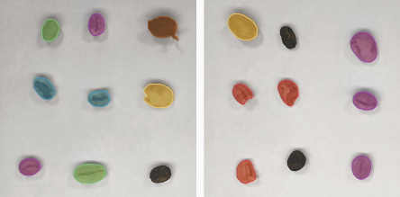

จากภาพถ่ายสู่การจำแนกเมล็ด
- ถ่ายภาพเมล็ดกาแฟ
- YOLO ระบุตำแหน่งและจำแนก
- แสดงขอบเขตด้วยมาสก์สี
เปิดตัวอย่างภาพเข้าและผลจำแนก

ภาพถาดใช้สื่อขั้นตอนการถ่ายภาพ ส่วนภาพมาสก์เป็นตัวอย่างที่กำกับไว้ล่วงหน้า
อ่านภาพมาสก์อย่างไร
มาสก์คือพื้นที่สีที่ซ้อนทับบริเวณเมล็ดในภาพ เพื่อระบุขอบเขตและแยกกลุ่มของเมล็ดแต่ละเมล็ด ภาพตัวอย่างสองช่องนี้แสดงมาสก์ครบทั้ง 7 กลุ่มเมื่อดูร่วมกัน
- น้ำตาล · เศษเปลือกเชอร์รีแห้ง
- เหลือง · เมล็ดกะลา
- เขียว · เมล็ดอ่อน
- ม่วง · เมล็ดดี
- ฟ้า · เมล็ดหูช้าง
- ดำ · เมล็ดดำ
- แดง · เมล็ดแตกหัก
ภาพประกอบที่กำกับขอบเขตและประเภทของเมล็ดไว้ล่วงหน้า
ดูจุดสังเกตทั้ง 7 กลุ่มตลาดกาแฟไทยและโจทย์ของชุมพร
โรบัสตามีสัดส่วน 32.54% ของผลผลิตกาแฟไทย ตามประมาณการปีเพาะปลูก 2568/69 โดยชุมพรเป็นหนึ่งในแหล่งผลิตสำคัญ แหล่งข้อมูล สศก.
ปริมาณส่งออกเมล็ดกาแฟดิบของไทย
เมล็ดกาแฟดิบทุกสายพันธุ์ทั่วประเทศ · ตัน
ยอดส่งออกปี 2568 (ประมาณการ) เพิ่มขึ้นประมาณ 321% จากปี 2567 ขณะที่ไทยนำเข้าเมล็ดกาแฟดิบ 33,286 ตัน (ประมาณการปี 2568)
รายงาน สศก. ตาราง 13–14 อ้างอิงกรมศุลกากร · ตารางนี้ไม่มีข้อมูลแยกเฉพาะโรบัสตาชุมพรปัญหาที่พบในชุมพร
- การคัดแยกผลผลิตยังไม่ทั่วถึง ผลกาแฟบางส่วนเก็บรวมกันโดยไม่ได้คัดแยกตั้งแต่ต้นทาง
- การตากและควบคุมความชื้น การตากและควบคุมความชื้นที่ไม่เหมาะสมเพิ่มความเสี่ยงเชื้อรา
- แรงงานและอุปกรณ์ แรงงานเก็บเกี่ยวที่ชำนาญและอุปกรณ์ที่เหมาะสมมีจำกัด
แนวทางการพัฒนากาแฟจังหวัดชุมพร
ขอบเขตของโครงการคือการจำแนกลักษณะที่มองเห็นได้จากภาพเมล็ดกาแฟ การประเมินความชื้นใช้เครื่องมือวัดเฉพาะ
จุดสังเกตทั้ง 7 กลุ่ม
เปรียบเทียบจากสี รูปร่าง ขอบ และผิวของเมล็ด
ดูรายละเอียดทั้ง 7 กลุ่ม
- เมล็ดดี Good สีเขียวอมเทา ผิวเรียบ ทรงสมบูรณ์
- เมล็ดหูช้าง Shell โค้งกลวงคล้ายใบหู เห็นด้านในเป็นแอ่ง
- เมล็ดดำ Full Black สีดำหรือเทาเข้มเกือบทั้งเมล็ด
- เศษเปลือกเชอร์รีแห้ง Hull / Husk สีน้ำตาลเข้ม มีเปลือกเชอร์รีแห้งหุ้ม
- เมล็ดแตกหัก Broken ขอบแหว่ง หรือเหลือเพียงบางส่วนของเมล็ด
- เมล็ดกะลา Parchment มีกะลาบางสีเหลืองครีมหุ้ม ผิวมักดูเรียบและเงา
- เมล็ดอ่อน Immature สีซีดอมเหลือง ร่องกลางมักเปิดกว้างและขอบย่น